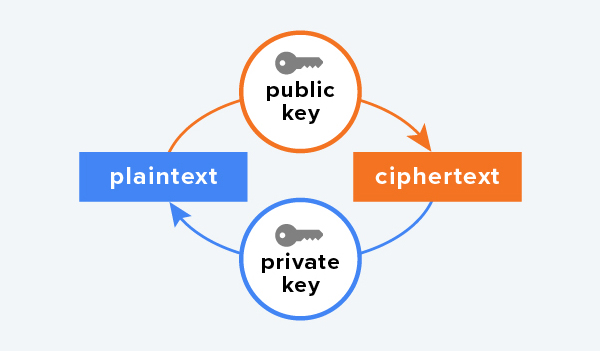

Inleiding
Om de veiligheid van ICT-systemen goed te maken en te houden, zijn er veel partijen nodig die zich daarvoor inzetten: cybersecuritybedrijven, de overheid, softwareontwikkelaars en zeker ook de gebruikers. Er zijn heel veel verschillende maatregelen die zij kunnen nemen om de veiligheid van een systeem te vergroten. Deze maatregelen kun je verdelen in vier soorten: preventie, detectie, repressie en correctie.
Preventie
Preventieve beveiligingsmaatregelen zijn de maatregelen die worden genomen om problemen te voorkomen. Dat begint bij hard- en software. Die moet veilig worden gemaakt en de software moet up-to-date blijven. Dat betekent bijvoorbeeld dat een softwareontwikkelaar op de hoogte moet zijn van manieren waarop je goed beveiligde software maakt.
Een voorbeeld van een softwaresecuritymaatregel is sandboxing. Deze techniek laat apps in hun eigen afgesloten ruimte draaien, waar ze alleen toegang krijgen tot hun eigen geheugen en opslag. De meeste apps hebben namelijk geen reden om toegang tot andere plekken in het systeem. Willen ze dat wel, dan moeten ze toestemming vragen aan het besturingssysteem. Op je telefoon zie je dit terug wanneer een app toegang vraagt tot bijvoorbeeld je camera, je bestanden of je locatie. In een sandbox kan malware geen schade aanrichten.
Wanneer een bedrijf persoongegevens verwerkt, is het wettelijk verplicht preventieve maatregelen te nemen om de gegevens te beschermen. Dat is vastgelegd in de Europese privacywetgeving. Verder moet het bedrijf uitleggen hoe het de gegevens beschermt. Op die manier kun jij als gebruiker zelf nagaan of je gegevens veilig worden bewaard, en goede keuzes maken waar je je gegevens wilt achter laten.
Detectie
Helaas is software niet perfect. Er zullen altijd kwetsbaarheden in zitten die kunnen worden misbruikt. Daarom is detectienodig: controle op misbruik. Bijvoorbeeld door bij te houden hoe vaak er een inlogpoging wordt gedaan met een bepaalde gebruikersnaam. Als dat te vaak is, kan de gebruiker worden geblokkeerd. Om detectie mogelijk te maken, worden allerlei gegevens over het gebruik van het systeem gelogd.
Een belangrijk hulpmiddel is de firewall. Die scant al het binnenkomende netwerkverkeer. Alle datapakketten worden gecontroleerd op kwaadaardige gegevens. Ook kan een firewall controleren of het verkeer afkomstig is van een vertrouwde bron. Firewalls beschermen tegen hackers, malware en spam. Er zijn firewalls voor computers en voor netwerken. Een tweede belangrijk type detectiehulpmiddel is anti-malwaresoftware. Die scant een apparaat op malware en verwijdert die.
Repressie en correctie
Als er sprake is van een aanval of als er malware is aangetroffen, moeten er maatregelen worden genomen (repressie) en moet eventuele schade worden hersteld (correctie). Welke maatregelen nodig zijn, hangt sterk af van het soort aanval.
Als er malware wordt aangetroffen op een apparaat in een netwerk, kan het voldoende zijn als die wordt verwijderd door anti-malwaresoftware. Een DDoS-aanval die niet sterk genoeg is, kan tijdelijk zorgen voor een iets tragere website. En als een server niet meer beschikbaar is vanwege beschadigde data, een hackpoging of malware, kan er worden overgeschakeld op een back-upsysteem. Het beveiligingslek moet dan wel zo snel mogelijk worden gedicht.
Wanneer de problemen serieuzer zijn, zullen er systemen uitvallen of moeten worden uitgezet. Bijvoorbeeld om te voorkomen dat data in verkeerde handen valt. In dat geval is er vrijwel altijd ook financiële schade door de uitval van de systemen en door de correctiekosten.

Symmetrische encryptie
Het versleutelen van gegevens is belangrijk om te voorkomen dat het in verkeerde handen komt. Encryptie is in alle tijden toegepast. En je hebt het vast zelf ook wel eens gedaan. Bijvoorbeeld door letters te veranderen. Stel dat je elke letter verandert door de letter die drie plaatsen verder in het alfabet staat. Dan wordt elke a een d, elke b een e, enzovoorts. Het woord encryptie wordt dan hqfubswlh. Je kunt er ook voor kiezen om niet drie, maar vijf letters verderop te kiezen: elke a wordt dan een e, b een f, enzovoorts.
Dat je elke letter vervangt door een volgende letter uit het alfabet, noemen we het algoritme. Dat is de manier waarop de encryptie werkt. Het aantal letters dat je ‘vooruitschuift’ in het alfabet, is de sleutel. Voor elke vorm van encryptie geldt dat je zonder de sleutel de oorspronkelijke zin niet terug kunt krijgen. Encryptie die gebruikmaakt van één sleutel, heet symmetrische encryptie. Die sleutel wordt zowel gebruikt voor het versleutelen als het weer ontsleutelen van de data.
Asymmetrische encryptie
Symmetrische encryptie is geschikt als de data niet hoeft te worden getransporteerd. Transporteer je de data wel, dan moet de ontvanger de data ook kunnen ontsleutelen. Daar heb je de sleutel voor nodig. Maar het delen van die sleutel is riskant, want die kan worden onderschept.
Om dit probleem op te lossen, is asymmetrische encryptie bedacht. Dit wordt ook wel public key encryptie genoemd. Bij deze vorm van encryptie zijn er twee sleutels: een een publieke sleutel en een geheime sleutel . Met de publieke sleutel wordt een bericht versleuteld. Met de geheime sleutel kan het versleutelde bericht weer worden ontsleuteld. Iedereen mag de publieke sleutel weten. Dat is geen probleem, want je versleutelt er alleen maar mee. De geheime sleutel wordt nooit verspreid.
Hoe werkt het precies? Alice wil een geheim bericht sturen naar Bob. Helaas luistert Eve alle communicatie af. Daarom moeten ze hun berichten versleutelen. Om dat te doen, kiest niet Alice (de verzender van het bericht), maar Bob (de ontvanger) een publieke sleutel én een geheime sleutel. Hij maakt de publieke sleutel openbaar, maar de geheime sleutel verspreidt hij niet.